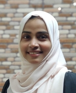

Fathiha Rahath K K
Web Developer/Devops Engineer

DevOps professional skilled in Azure,
Docker, and GitHub. Implemented
disaster recovery for Azure, migrated
CI/CD to GitHub Actions, and automated
VM backup via Github workflows
Education
Master of Computer Applications
MG University,2018
GPA : 7.01/10.00
Bachelor of Science in Computer Science
MG University,2016
GPA : 9.01/10.00
Experience
Devops Engineer
TCS
Jan 2022 - Present
- Led a DevOps team of 3, enhancing CI/CD pipelines and automating
infrastructure management.
- Streamlined deployment processes, resulting in increased efficiency
and reduced downtime.
- Utilized Azure Portal, Azure DevOps, Docker, AKS,
GitHub,Ansible and GitHub Actions to streamline and automate
DevOps processes.
Skills
Azure Devops
- Designed and maintained CI/CD pipelines to automate application
builds, tests, and deployments.
Azure Portal
- Managed and monitored cloud resources including VMs,
databases, and networking components
Docker
- Created and managed Docker images and containers for consistent
application environments.
Azure Kubernetes Services
- Deployed, managed, and scaled containerized applications using
AKS.